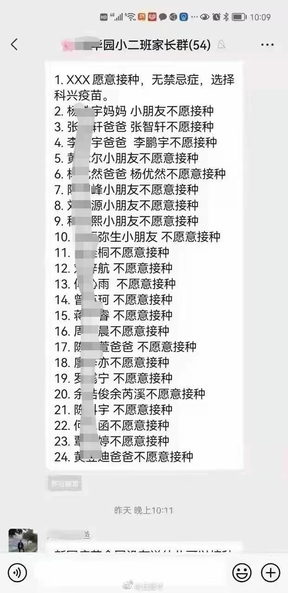

☞晴天霹雳：幼儿园下发打疫苗报名表
周三是在恐惧与愤怒中度过的，现在情绪稍稍稳定，才能坐下来写出我的心声。
起因是昨天幼儿园的群里，老师发了通知，教育当局要求给3～11岁的儿童打新冠疫苗。报名链接发出来以后，群里没人吭声。
到晚上，老师再一次@所有人，说不报名的话也要在电子文档上报名。我心想，不报名也要报名，这也太霸道了吧？点开瞧了一下，到目前为止似乎还是自愿原则，可以不打的。
网上流传的截图显示，多数家长都有同样的顾虑。

但这样就往我的心里投下了一个巨大的阴影，因为你知道他会不会变成前一阵子多地施行的强制扎针，犹记得，当时很多城市规定，没打疫苗的不能进医院、商场等公共场所。因此3-11岁扎针，哪怕坚持自愿原则，也要担心，随着时间推移，当“自愿”到了一定的量，恐怕连自愿的权利也会丢掉。
☞既然是国家整体部署，决策为何不透明
查了不少资料发现，各地基本都是“不约而同”地在10月27日（周三）这天宣布消息的，湖北、广东、河北、青海、浙江、广西、海口、福建等等都有。其中，长三角地区的上海和金华，都在周三这天把消息通过幼儿园等渠道，直接向家长宣布了消息。
给3-11岁的小孩子打新冠疫苗，其科学依据和行政依据是什么？查了半天，似乎没查到国家级机构的指示，仅查到笼统的这么一句：
多省的卫健委是有表态的，比如海南，就非常直白地说了，“据海南省卫健委消息：按照国家整体部署,海南省10月24日起全面启动3—11岁人群新冠病毒疫苗接种。”广东也是据此表述的。
既然有国家的整体部署，显然，这是一项由国家自上而下要推行的政策，各省遵命办事。
然而，这么一个事关上亿儿童身体安危的扎针计划、整体部署，它在之前似乎毫无征兆，媒体上也没吹过风，忽然就这样往下执行了。
其不仅相当之不透明，更像是一个拍脑袋决策。
☞必要性何在？科学性何在？
媒体报道这个政策的时候，都是把自己当做卫健委的宣传机器，照本宣科，基本就是把执行方案照搬出去。
有些城市强调，让3-11岁孩子扎针，是因为前期有的地方疫情是发生在校园之类的。
这种理由是完全站不住脚的。中国有上亿的孩子，如果有几十个孩子由于旅行或密接致病，正常要做的是做好旅行痕迹管理，当疫情发生的时候，正常隔离就行，为什么要让上亿的孩子陪绑？
如果100个孩子生病，让1个亿的孩子扎针。是不是傻？
算经济账，这是多大的成本和负担？一针按100元计，2针一共200元，一个亿的孩子就是200个亿。这钱是花谁的？不心疼吗？
算健康账，这几款所谓被认定为“安全”的疫苗，它的实验数据公布了没有？样本量是多少？不良反应发生率是多少？别跟我说什么不良反应率低，真的低吗，低到什么程度？请你清晰的告诉我。哪怕只是万分之一的不良反应率，一个亿就会有1万个孩子有不良反应，那么这1万个家庭怎么办？这1万个孩子怎么办？这是能拍脑袋的事情吗？
孩子们还在长身体的阶段，身体千变万化，经不起折腾。不成熟的疫苗，请不要拿小孩做实验。现在国家在提倡多生孩子，如果对于既有的孩子都不肯好好善待，那么这会打击生育意愿的，会让很多家长后悔把孩子生在这片土地上。
☞成年疫苗：效果做评估了吗？
国家卫生健康委7月5日消息，截至7月4日，我国新冠病毒疫苗接种剂次突破13亿大关。这几乎都是给成年人打的。那么它们的效果怎么样？需要有一个绩效评估吧？如果拿不出这个绩效评估，冒然再给3-11岁身体弱小的孩子们打，这是不负责任的。
过去政府方面总是说，打了疫苗，能降低重症和死亡率。自从疫苗推广以来，发生了多波区域疫情了吧？其重症和死亡率是多少？其数据请公布一下，跟2020年没有疫苗的时期进行比较研究，看是不是真有什么用？
假如没用，请别往孩子们身上打了好吗。
目前我国主要是通过严格的隔离来切断病毒传播，这一招简单粗暴，却是奏效的。如果疫苗真那么管用，十几亿剂疫苗打下去了，咋还要严防死守？既然已经严防死守了，为何还要打疫苗，连3岁孩子都不放过？
我昨晚上在家庭会议上说了，如果学校硬性要求打这个疫苗，我不惜让孩子退学，教育虽然重要，但是保命更重要。